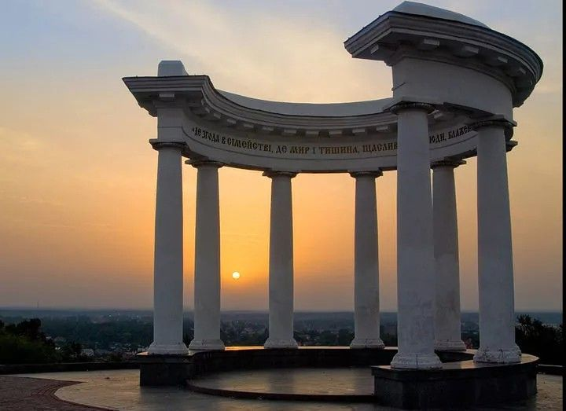

Полтавський край здавна вважається духовним і культурним серцем України. Саме тут формувалася літературна українська мова, а місцеві краєвиди надихали видатних письменників і художників. Гості регіону обов’язково відвідують Диканьку, Миргород та славетну Опішню — столицю українського гончарства.
Окрім музейних комплексів та архітектурних пам’яток, Полтавщина славиться своєю гостинністю та традиційними стравами, серед яких особливе місце посідають справжні полтавські галушки. Спокійні прогулянки берегами Ворскли залишають найтепліші спогади про цей регіон.